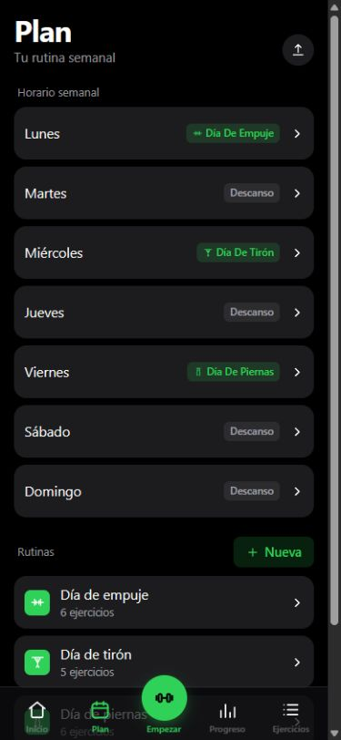
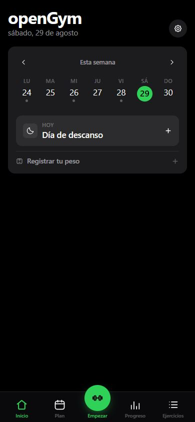
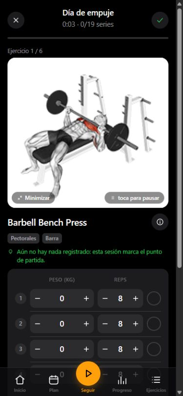
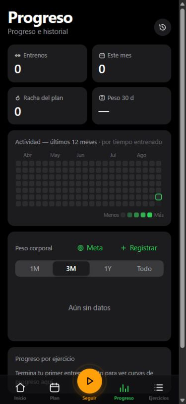

💚 4 apoyos💬 2 comentarios
01
Tu semana, clara
Asigna una rutina a cada día y cambia el plan cuando la vida se cruza.

Grupo privado · solo con invitación
OpenGym es nuestro diario de entrenamiento privado: registra pesos, series y progreso, y cuando te apetezca comparte la sesión con el grupo. Sin cuotas, sin anuncios y sin vender nuestros datos.

Todo el entrenamiento, en el bolsillo
Prepara tu semana, empieza una rutina y OpenGym recuerda lo que hiciste la última vez. Al terminar ves el progreso y decides si esa sesión se queda solo para ti o entra en el grupo.
Asigna una rutina a cada día y cambia el plan cuando la vida se cruza.

Series, repeticiones, peso, descanso y marcas personales en una sola pantalla.

Actividad, rachas, peso corporal y evolución por ejercicio, sin adornos.

La parte divertida
Los entrenamientos nuevos pueden sumar puntos durante la semana. Cada categoría tiene su propio podio y el ranking global premia al deportista más completo, no solo al que mueve más kilos.
Así se puntúatu resultado ÷ mejor resultado × 100El líder consigue 100 puntos. El ranking global es la media de las categorías activas.
Ejemplo visual · los nombres y puntos no son datos reales
Retos entre amigos
Cualquiera puede crear un reto de 1 a 31 días. Te apuntas si quieres y solo cuenta lo que haces desde que entras.
RETO DE SESIONES
RETO DE TIEMPO
RETO DE MARCAS
Privacidad por defecto
Al crear la cuenta se activan tanto las funciones sociales como todos los campos de privacidad. Puedes apagar cada opción por separado desde Ajustes.
En una cuenta nueva, todo esto viene activado.
Instalar en iPhone
En iOS solo funciona desde Safari. Si abres OpenGym en Chrome, la opción no aparece: no significa que la app esté rota.
¿Te apuntas?
Entra desde el móvil y crea tu perfil. Si ya tienes un código de invitación, úsalo para acceder; si no, solicita acceso desde la propia app. Tu cuenta quedará en espera hasta que Kaio la apruebe.
Funciona como web y como app instalada · acceso privado · código abierto AGPL-3.0